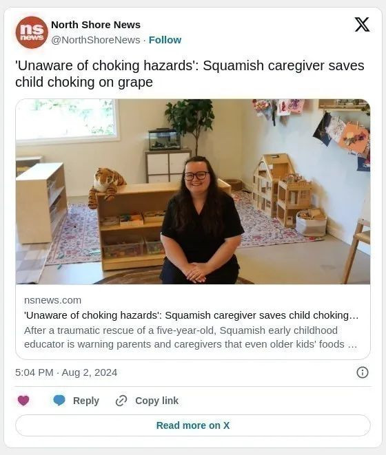
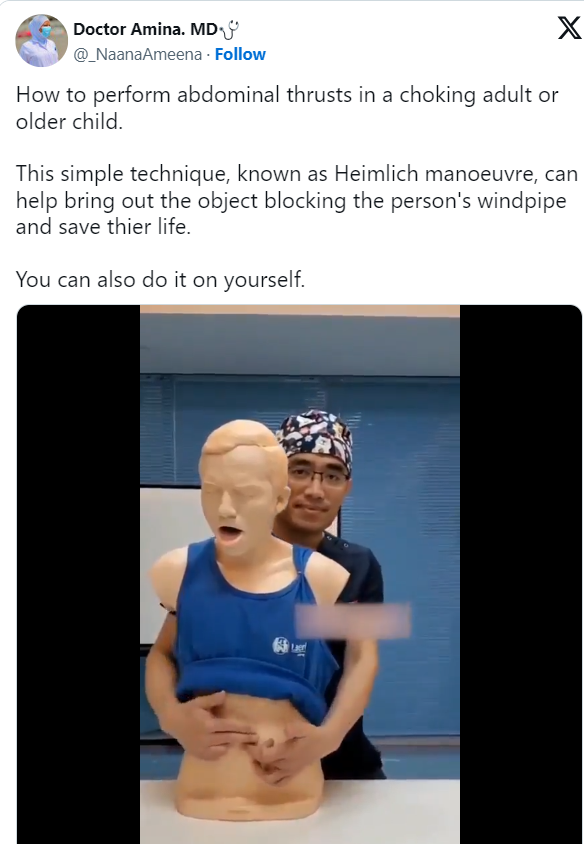

BC省儿童早期教育工作者阿曼达-坎贝尔（Amanda Campbell）在上月底救下一名被葡萄噎住的五岁儿童后，提醒家长和看护人注意某些食物会造成的窒息危险。
阿曼达-坎贝尔是一位教育工作者，事发时在大温附近的斯夸米什 Brackendale 社区的持证托儿所 Paragon Kids Inc 工作，当时她正在值班，孩子被从家里带来零食中的一整颗葡萄噎住。
起初，坎贝尔的同事开始采取行动，想把葡萄从孩子嘴里弄出来，但根本拿不出来。
当时立即拨打了 911的坎贝尔说：”很多人都认为，儿童这个年龄不需要切葡萄。“
她的同事随后也要求坎贝尔接手照顾孩子。
坎贝尔先给孩子做了海姆立克急救法（Heimlich manoeuvre），即在肋骨下向内向上推，但也没有奏效。
然后，她又做了更多的背部击打。
但是，葡萄还是没有出来。
然后，坎贝尔试了一下 LifeVac 装置，这是儿童护理中心的一种气道清理装置。
她试了两三次，都无济于事。
坎贝尔回忆说：”此时，孩子脸色发紫，几乎没有呼吸。”
随后，她又做了一次海姆立克急救法，然后又用力击打孩子的背部。
最后，葡萄飞了出去。

医护人员赶到后，对孩子进行了评估，并送往医院，以防万一。
坎贝尔说，这名五岁的孩子已经没事了，但事件对所有在场相关人员都造成了极大的心理创伤。
当被问及在整个惊险的事件中如何保持冷静时，坎贝尔说，她所接受的训练和冷静开始发挥作用–直到孩子安全为止。
她说：”我只是做了我当下需要做的事情。”不过事过之后，她也害怕地流下眼泪。
坎贝尔来自苏格兰，她说这是她干预过的最严重的窒息事件，但并不是唯一的一次。
在此之前，她曾救助过一个被燕麦棒噎住的孩子；另一次，是一大块西兰花；还有一次，是一个被坚果酱噎住的孩子。
她表示之所以想公开事件是因为很多人都没有意识到窒息的危险。
她表示：”热狗、爆米花、葡萄、橄榄、西红柿，甚至棉花糖……都应该对半切开。
坎贝尔说，由于孩子们的气管还很小，就像吸管那么大，一些专业人士建议在孩子六岁甚至八岁之前都要把食物切碎，并指作为成年人也会为自己切碎食物。
为儿童切葡萄没有固定的截止年龄
据BC省儿童医院称，”儿童窒息死亡主要是由食物和小物品造成的，如凝胶糖果、热狗、葡萄、气球、光盘、电池和一把坚果”。
具体到葡萄，英格兰和威尔士的注册慈善机构儿童事故预防信托基金指，在和食物有关的事故中，葡萄是第三大常见死因。
该网站写道：”5岁以下的孩子最好把葡萄切开，因为他们的呼吸道比较小，很容易被葡萄堵住，但小学生虽然咀嚼和吞咽能力比较强，但呼吸道可能还是比较小。这就是为什么没有固定的儿童切葡萄的截止年龄。”。
坎贝尔补充指，在苏格兰，儿童大约从八岁开始学习急救，她希望在加拿大人当中应该普及从小学习急救知识。

她希望能提高人们的意识，确保给小孩子的食物是切好的。